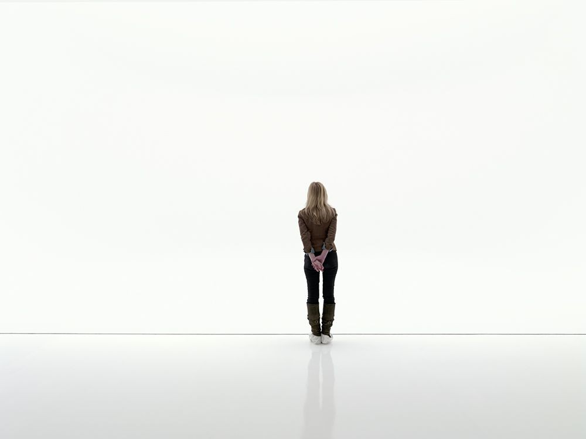
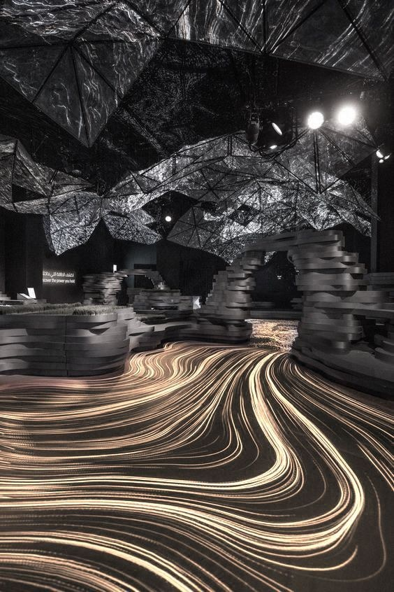
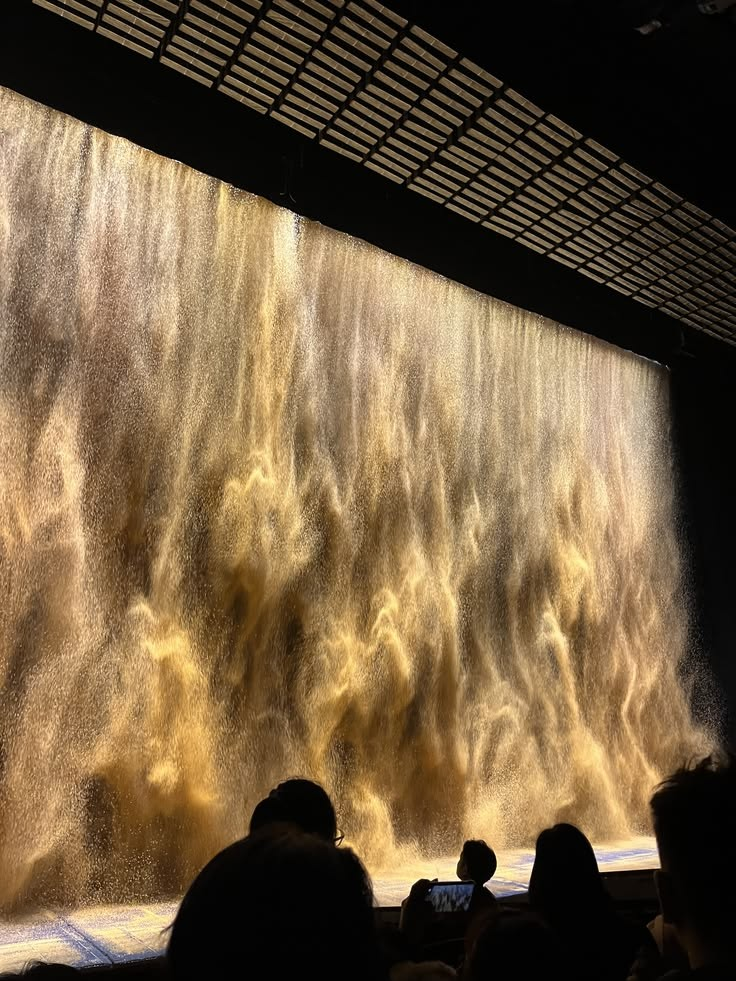
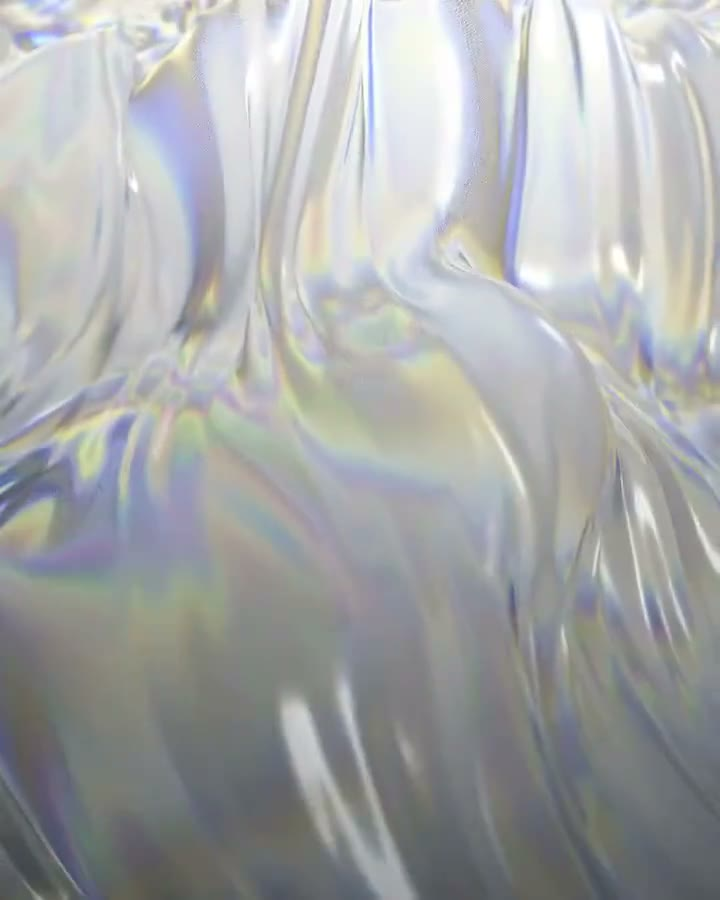
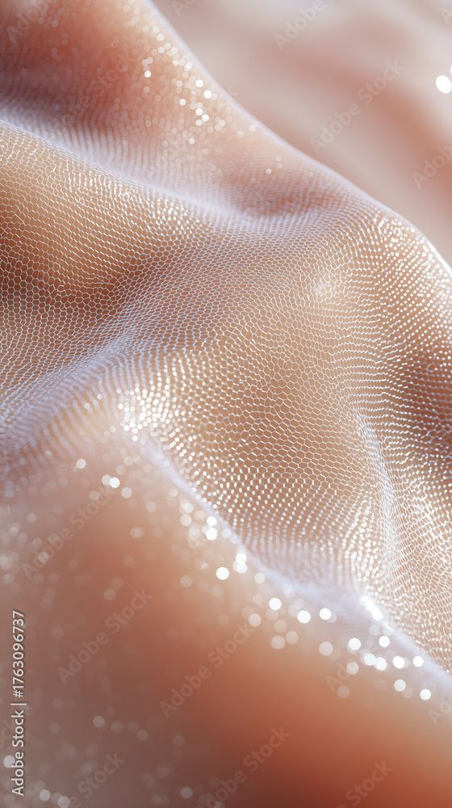
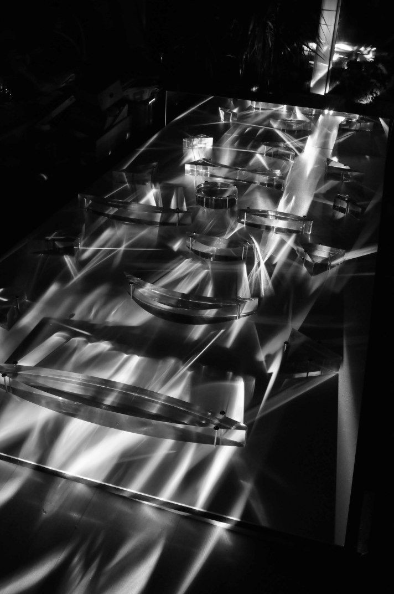

Pele como jóia
O despertar
da matéria
O despertar da matériaTema
O despertar da matéria é um jantar multissensorial sobre a pele. Em cinco etapas, a sala, o som e os pratos contam uma transformação: a pele começa áspera como pedra e areia, é hidratada pela água, como faz o ácido hialurônico, fica macia como seda e termina brilhando como jóia.
O jantarMapa

InícioSala branca. A forma recebe os convidados, os leva à mesa e abre a noite.- Big bangA passagem mais rápida, em preto e branco.

EntradaCrosta, pedras e areia dourada até os pratos.
Partícula para matériaAs partículas ganham corpo.- Prato principalFormas orgânicas, água e ácido hialurônico.

Matéria para sedaA matéria vira dobras de seda.
SobremesaA pele aparece, com textura de seda.
FinalCristais na mesa quebram a luz em cores.
Etapa
Início
A sala respira. Os convidados entram num espaço todo branco e a forma os recebe e os leva a sentar. Com todos à mesa, ela abre a noite e fala; a voz ganha refrações que mudam os elementos da mesa.
- Espaço
- Branco e contínuo.
- A forma
- Recebe cada convidado e o leva até a mesa.
- Fala
- Abre a noite e fala com cada convidado.
- Refrações
- A voz se desdobra e muda os elementos da mesa.
- Som
- White noise constante, com a voz da forma em eco.
InícioReferências
InícioA forma
Transição
Big bang
Big bangA transição
A parte mais rápida do jantar. Começa quando a conversa à mesa termina.
- Movimentos matemáticos. Precisos, repetidos, acelerados.
- Formas rápidas. Surgem e desaparecem em segundos.
- Transformação. Uma forma vira outra sem parar.
- Grave. Um som que se sente no corpo.
- Preto e branco. Só luz e sombra, sem cor.
Big bangReferências
Etapa
Entrada
Com o impacto do big bang surgem a crosta e as pedras, que são também a pele sem cuidado. Por entre elas correm areias douradas, que seguem até os pratos onde a entrada é servida.
- Crosta e pedras
- Nascem do impacto do big bang.
- Pele sem cuidado
- Áspera, rachada, mineral.
- Areias douradas
- Passam pelas pedras e seguem até os pratos.
- Nos pratos
- Mandalas de areia criadas pela frequência do som que ecoa na sala.
- Som
- Frequências que ecoam na sala e desenham as mandalas nos pratos.
EntradaReferências
Transição
Partícula
para matéria
Partícula para matériaReferências
Etapa
Prato principal
Depois da transição, a matéria chega à mesa. A fase do prato principal é feita de formas orgânicas e água: a pele que antes estava seca agora é hidratada, como faz o ácido hialurônico.
- Formas orgânicas
- Gotas, curvas e superfícies que se fundem.
- Água
- Em tudo, na mesa e nos pratos.
- Ácido hialurônico
- A molécula que segura a água na pele.
- Nos pratos
- O prato principal servido em formas orgânicas e água.
- Som
- Não definido
Prato principalReferências
Transição
Matéria
para seda
Etapa
Sobremesa
Depois da água, a pele aparece. Na sobremesa ela surge lisa e luminosa, com a textura da seda: a pele cuidada, como jóia.
- Pele
- Revelada, macia e luminosa.
- Seda
- Dobras, brilho e movimento suave.
- Luz
- Reflexos que correm pela superfície.
- Nos pratos
- A sobremesa se abre como uma flor de seda.
- Som
- Não definido
SobremesaReferências
Etapa
Final
No final, a pele vira jóia. Cristais tomam a mesa e quebram a luz em cores que correm por tudo.
- Cristais
- Transparentes e facetados, sobre a mesa.
- Luz
- Atravessa os cristais e se abre em arco-íris.
- Pele como jóia
- O brilho que fecha a noite.
- Nos pratos
- Reflexos de cristal e luz colorida.
- Som
- Não definido